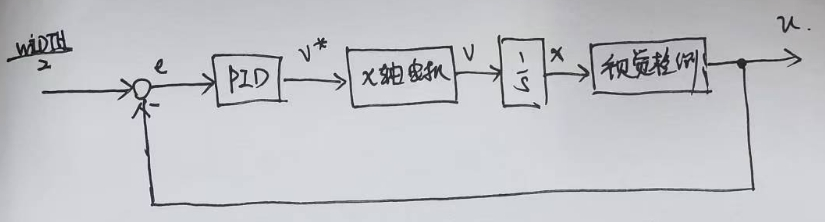

/*-----------------------------*/
📅 2024-08-30
🔄 2024-08-30
⌚ Reading time: 2 min
📂
这一部分总结一下我以前做过的使用麦克纳姆轮底盘的机器人的一些小项目。
底盘运动控制，麦克纳姆轮底盘分析，运动学解算，4 个电机速度和空间速度的关系。使用遥控器控制实现底盘的平移和旋转运动
在此基础上，加一个位置控制器，实现空间位置的跟踪控制，空间目标位置可以使用 UWB 定位或者视觉检测 airtag 等，这里给一个识别 airtag 的演示，使用 openmv 的到标签的距离，并控制底盘保持距离恒定。
设定一个底盘坐标系，其中：
已知底盘空间速度求个轮子的速度。反解
$$
\left [
\begin{array}{}
v_1 \\
v_2 \\
v_3 \\
v_4 \\
\end{array}
\right ] = J
\left [
\begin{array}{}
v_x \\
v_y \\
v_z \\
\end{array}
\right ]
$$
一个底盘速度空间到四轮转速空间的变换。通过对麦克纳姆轮的分析，速度合成然后结算后，这个变换矩阵为
$$ J = \left [ \begin{array}{} 1 & -1 & L + W \\ 1 & 1 & - (L + W) \\ 1 & 1 & L + W \\ 1 & -1 & - (L + W) \\ \end{array} \right ] $$
也即根据给定控制指令计算 4 个轮速的表达式
$$ \left \{ \begin{array}{l} v_1 = v_x - v_y + k \cdot v_z \\ v_2 = v_x + v_y - k \cdot v_z \\ v_3 = v_x + v_y + k \cdot v_z \\ v_4 = v_x - v_y - k \cdot v_z \\ \end{array} \right . \tag{1} $$
最核心的方法上的东西就这么多。
计算得到 4 个轮的给定速度以后，可以在做一个电机的闭环控制，当然直接当做给定的电压输出也是能看到效果的，但是底盘运行的精度严重依赖于电机特性。
对于 ROS 底盘来讲，闭环是有必要的，并且有些导航定位算法可能需要里程计的信息。
控制代码并不复杂，当时的控制代码找不到了，大概的思路：串口接收控制指令，或者接收遥控器的控制指令，处理为三维空间速度，然后进行解算得到 4 个电机速度调用电机控制函数完成控制。
这里我写一个参考实现。
typedef struct {
double x;
double y;
double z;
} chassis_velocity_t;
/* 存放控制指令 */
chassis_velocity_t v;
void chassis_control(chassis_velocity_t *v)
{
double motor_1, motor_2, motor_3, motor_4;
motor_1 = v->x - v->y + v->z;
motor_1 = v->x + v->y - v->z;
motor_1 = v->x + v->y + v->z;
motor_1 = v->x - v->y - v->z;
motor_contorl(motor_1, motor_2, motor_3, motor_4);
}
裸机开发的话，主要考虑代码结构，控制逻辑、算法、设备驱动、片内外设驱动的分层。
裸机的话，做闭环控制需要定时器中断，程序设计上复杂了，就简单一点读遥控器数据，然后解算，然后发送电机 pwm 占空比。
主函数，控制逻辑的实现
int main()
{
init();
ctrl_data_t ctrl_data = (struct ctrl_data*)malloc(sizeof(struct ctrl_data));
while(1)
{
read_controller_data_to(ctrl_data);
chassis_control(ctrl_data);
delay_ms(50);
}
}
可以使用轮询查询 + 控制输出的方式。
read_controller_data_to 函数内部需要实现硬件上对遥控数据的读取如从 uart 读取并解析。
chassis_control 函数内调用了 motor_contorl 函数，此函数需要对接具体的电机控制驱动，直流电机的话就是 PWM 和 一些 GPIO，CAN 总线电机的话就是用 CAN 外设对着通信协议实现。
核心的逻辑不依赖于底层外设驱动，这样的话可以在仿真环境中测试算法的正确性。在仿真环境中同样也就实现仿真环境提供的 api 完成数据读取和电机控制。
当要考虑的事情变多以后，裸机开发就有一些思维上的小麻烦了，也不是不能做，但是多线程的想法可以让开发时更专注的考虑拆解开的问题。
基本的底盘逻辑还是上面的那样。现在只需要多开一个线程，接收跟踪目标的空间位置，然后与期望位置做差，后面跟一个 PID 控制器即可，PID 控制器的输出为期望速度。
新的线程需要做的事情类似下面这个控制框图

将期望速度替换遥控器接收指令，即可完成跟踪的效果。